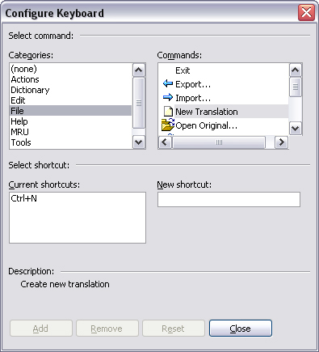

The Configure Keyboard Dialog is used to change the shortcut key assignments for the commands in Ini Translator. Select Configure Keyboard from the menu to display the dialog.
Click on Categories to view the items that are part of a specific category. When a category is selected, the Commands list displays all commands in that group.
Select a command to display its shortcuts in the Current shortcuts list. Note that a command can have more than one shortcut.

To remove a shortcut, select it in the list and click the Remove button.
To add a new shortcut, focus the New shortcut edit field and press the keys you wish to use for the shortcut, including any Shift, Ctrl and Alt modifiers. If another command is already using the shortcut you selected, it's name is displayed underneath the shortcut list. If you wish to assign the shortcut you typed to the currently selected command, click the Add button.
Click the Reset button to restore the previous assignments. The Reset button is only enabled if you have made any changes to the shortcut assignments.
Note that the shortcut assignments are only restored to the way they were when you opened the dialog, i.e. any previous changes will not be restored or removed. To restore all shortcuts to their initial defaults, close the program, erase the translator.alf file and start the program again.
The shortcut assignments are saved in the translator.alf file when you close the dialog and are available immediately in the program.